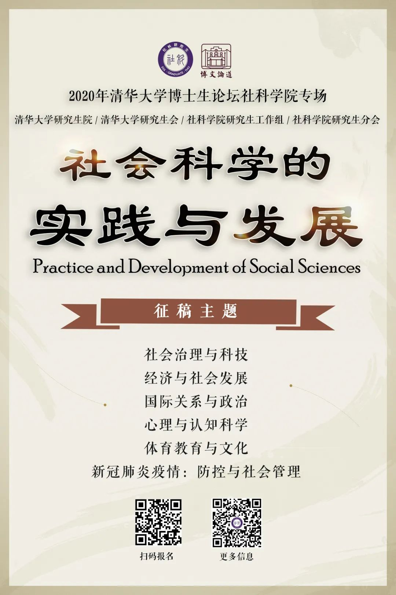
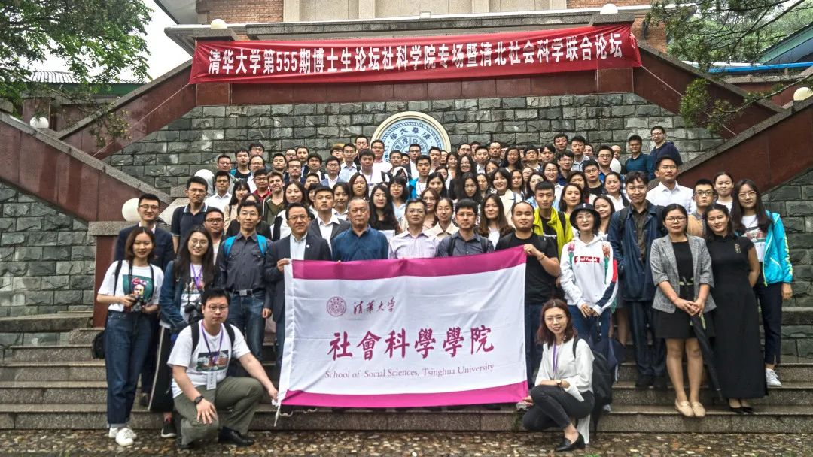
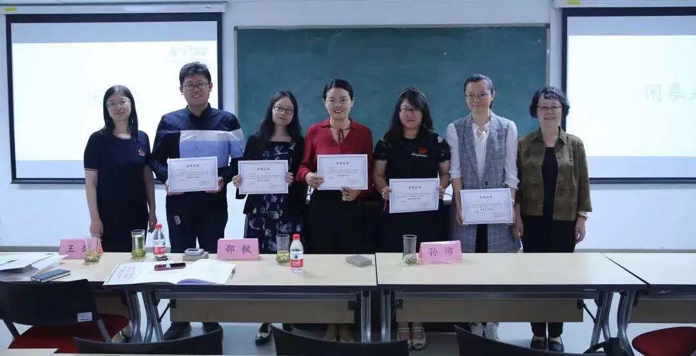
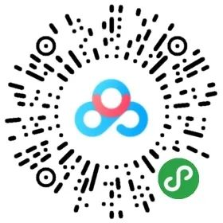

收录于合集
2020年清华大学 “博文论道·社会科学的实践与发展” 社会科学学院博士生学术论坛拟定于 2020年5月中上旬 举办（不排除因疫情原因延期举办或线上举办的可能），论坛旨在加强学术交流，促进学科交叉，增强创新意识，提高创新能力。
本次论坛现面向 全体博士、硕士研究生、本科生同学 征集论文！欢迎有相关学术志趣的同学积极投稿参与。

论坛亮点
专业导师指导报告
2019年社科博论邀请到 清北两校45名专家教授 组成学术委员会进行指导，更邀请到刘兵、吴金希等 资深教授进行特邀报告 。
本届社科博论还将邀请 著名学术期刊编辑 ，为同学们的学术论文写作、学术成果发表提供指导，更好地发挥论坛在学术指导方面的作用。
刘兵老师作嘉宾特邀报告
跨校联合充分交流
除校内同学，2019年社科博论还吸引了包含北京大学、南京大学、吉林大学、南开大学、中国人民大学在内的 14所高校学子积极投稿参与 。
本届博论将继续拓宽与国内高校间的联合渠道， 为投稿者创造充分的学术交流机会 。

2019年社科博论主论坛合影
联动活动精彩纷呈
2019年社科博论在主论坛的基础上，联动举办 5场“社世有声”学术午餐会 ，邀请资深专家教授与同学们面对面交流学术与生活问题、分享科研与职业经验。
本届社科博论将在午餐会的基础上创立 “社世有声”学术技能工作坊 ，邀请资深教师、高年级研究生 传授科研学术技能 ，辅助同学进一步提升学术能力。
彭凯平老师做客“社世有声”午餐会
荣誉证明奖品激励
2019年社科博论为每位参会同学颁发参会证书，还以分会场为单位评选出 优秀口头报告与优秀海报 ，为获奖者颁发 荣誉证书与精美礼品 。本届社科博论将设置更加丰富的奖项与礼品。

2019年社科博论“优秀口头报告颁奖仪式
征稿主题
本次“ 博文论道·社会科学的实践与发展 ”博士生学术论坛设置如下 6个征稿主题 ，涵盖但不限于：
社会治理与科技
经济与社会发展
国际关系与政治
心理与认知科学
体育教育与文化
新冠肺炎疫情：防控与社会管理
征稿要求
1
参与对象
本届博论参与对象 学校、院系、 年 级均不限 ，鼓励 硕士生（含国际和港澳台硕士生）、本科生 积极投稿。
2
参会形式
1. 投稿者可以选择以作 口头报告或海报张贴 的形式参加，并在报名和稿件提交时注明。
2. 投稿语言为 中文或者英文 。
投稿流程
本次论坛所投稿件应为投稿者本人原创学术成果， 同时欢迎投递已发表学术论文 。论坛组委会将严格保护投稿者的个人信息和学术成果，未经本人授权，不公开出版或供论坛外学术交流使用，欢迎广大与会者监督。
具体投稿与评审流程如下：
1
预报名
即日起至 4月5日 ，扫描下方二维码 填写问卷 ，通过问卷简介中的 群二维码 或 添加小助手微信（赵博闻 xiaozhaoan）加入论坛通知群 ，即可完成预报名。
论坛组委会将在群中及时 通知投稿、评审结果等 重要信息：
报名问卷二维码
小助手微信
2
正式报名
4月5日24:00前提交相关材料电子版 ，以压缩文件格式发送至 social_sciences@126.com ，文件命名格式为： 【2020社科博论】投稿主题+口头汇报/海报张贴+学校+专业+姓名 ，即可完成正式报名。
3
材料规范
材料提交要求如下， 请务必按照要求填写 （附件可通过扫描下方小程序码或点击“阅读原文”，输入 提取码x0su 下载）：

附件小程序码
《附件1：2020年清华大学社科学院博士生学术论坛全文格式》
《附件2：2020年清华大学社科学院博士生学术论坛论文摘要》
《附件3：2020年清华大学社科学院博士生学术论坛汇总提要》
4
评审
征稿结束后，组委会将邀请 资深教授 组成论坛学术委员会进行评审，评审老师将根据论文的研究意义、学术思想、研究内容、研究方法与应用技术等进行 盲审打分 。
5
反馈
评审环节结束后，组委会将 及时反馈评审意见、通知评审结果 ，并为录用稿件的投稿人提供论坛口头报告PPT/海报模板，请根据论坛通知在规定时间内 提交口头报告PPT或海报 。
备注：如有任何问题，可随时通过通知群或下方联系方式询问工作人员。
时间安排
2020年3月9日-4 月5日
|
接收投稿
—|—
2020年4月19-20日
|
反馈评审意见
通知评审结果
2020年5月中上旬
|
举办论坛（拟）
奖励机制
1.本届论坛将评选出部分优秀论文授予 “清华大学博士生学术论坛优秀口头报告或优秀海报”荣誉 ，同时颁发获奖证书与 精美奖品 。
2.本届论坛将为完成论坛报名、材料提交与现场参与的全部同学提供 参会证书 ，供 证明学术实践活动参与情况 或其他途径使用。
如有任何疑问或建议，请联系社科学院博士生论坛负责人：
赵博闻：13718112166 39153813@qq.com
王泽坤：18033705351 522901855@qq.com
黄嘉惠：17888837365 huangjh5117@163.com
点击“阅读原文”，输入提取码x0su下载征稿附件